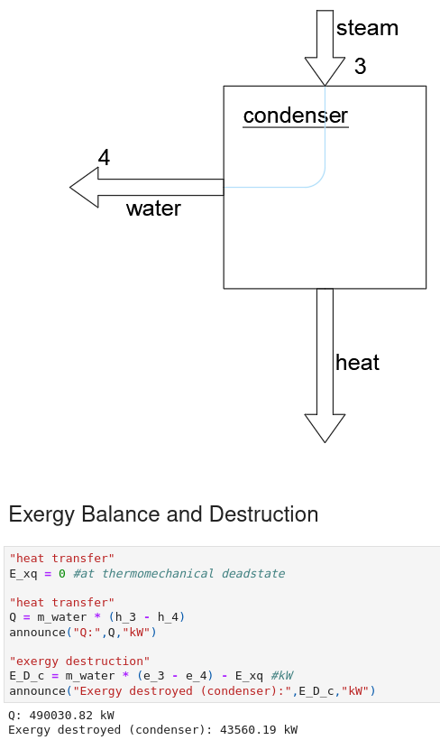
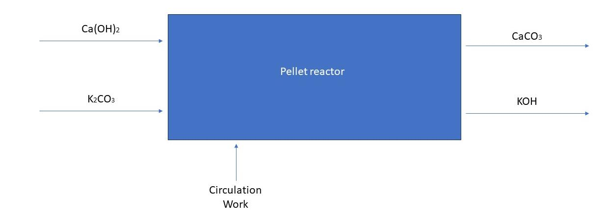
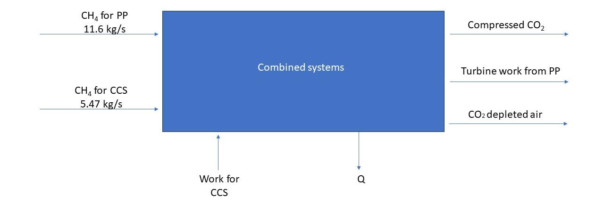

beccs exergy analysis
This project was presented as a requirement for the course MECH 450C: Energy Conversion and Storage, taught by Professor Andrew Rowe. This project was done by myself, Jersey Kertawidjaja, and my teamate Pouria Fyezi Oskouei.
Background and Objectives
One of the biggest challenges in the energy industry since industrialization is how to overcome greenhouse gas (GHG) emissions, especially in the past three decades. In general, there are three ways to alleviate this problem: 1- Utilizing more efficient energy systems 2- Using renewable energy sources 3- Finding a way to lower the ever-growing amount of GHGs already being emitted in the atmosphere over a long time.
The latter method will be the focus of this project. Since carbon dioxide (CO2) presents itself as a major GHG causing climate change, it is the substance in particular that is aimed to be reduced. To have a better understanding as to why this is an issue to be addressed, the pre-industrial CO2 amount in the atmosphere was 280ppm (part per million) or less. However, this has risen to more than 419ppm. This increase indicates that the amount of CO2 released in the past two centuries is more than 1T tons (1012 Tons=1015 Kg). The increase causing climate change, which is one of the determinant reasons resulting in 1.2 °C increase in average global temperature relative to the late-19th century. It is estimated, with the same slope of GHG emissions, at the end of this century the mole fraction of CO2 in the atmosphere will reach about 800ppm which will result in more than 4.5 °C temperature rise globally.
One of the proposed and currently used method to remove carbon from the atmosphere is called Direct Air Capture (DAC), which involves the capture of CO2 directly from ambient air. It uses a combination of chemical processes and engineered systems to selectively extract CO2 molecules from the atmosphere, even when it is present in trace amounts. DAC facilities typically consist of large fans or other air intake mechanisms that draw in air, which is then processed through a series of chemical sorbents or absorbents designed to capture the CO2. Once the CO2 is captured, it can be separated from the sorbent, compressed, and stored for subsequent use or long-term sequestration.
The captured CO2 can be used for a variety of purposes, including carbon-neutral fuel production, enhanced oil recovery, or for direct underground storage in geological formations. DAC is considered a promising technology for addressing the challenge of reducing atmospheric CO2 concentrations and mitigating climate change. However, it is still relatively expensive and energy-intensive compared to some other carbon removal methods.
Methods
The purpose of this project is to conduct an exergetic analysis of a DAC system coupled with a power cycle (that runs on natural gas) and see how DAC affects the efficiency of the system. This configuration of biogas power cycle and carbon capture is called Bioenergy with carbon capture and storage (BECCS) and is quite an alluring solution to the climate issue.
The exergy destruction in the system can be pointed out in the process and so does respective solutions to alleviate them. Moreover, as opposed to the DAC plants being currently run, we aim to find a better input energy source (other than natural gas, which in its own utilization produces CO2) and evaluate their corresponding feasibility.
Throughout the upcoming sections of the report, exergy analysis of a power cycle and CCS will be conducted separately. Total exergy destruction will be calculated from the cumulative amount of each device of each system, done to allocate the locations of large exergy destruction. The exhaust of the power cycle system would then be coupled with the inlet air of the CCS. The affects of change in concentrations can be noticed in CCS fuel requirements, and so does how the CCS affects the efficiency of the power cycle, as it requires more fuel input.
Result of Exergetic Analysis
Exergetic calculations need to be done on the power cycle system as well as the carbon capture component. Exergy of the states present in the components must be defined. Below are the expressions that will be used for defining the exergetic values:
Energy Balance
\[{dE \over dt}=Q-W+\sum{ \dot {m_i}} {h_i}^* - \sum{ \dot {m_e}} {h_e}^* \]
Exergetic Balance
\[{dE_x \over dt}=\sum{ {\dot E_{xQ}}} - \dot W + \sum{ {\dot m e_{xf}}} - \dot \Pi_D\]
Flow Exergy
\[e_{xf} \equiv (h-h_0) - T_0(s-s_0)+ {{V^2}\over2} + gz +e_{ch} \]
Chemical Exergy
\[\bar e_{ch} = \sum_{\alpha}^n(\bar e_{ch} + \bar R T_0 ln(x_\alpha))x_\alpha \]
System Efficiency
\[\eta_{system} = {E_P \over E_F} = 1 - {E_D \over E_F} \]
natural gas power cycle analysis
In order to compare the system effeciency of a typical natural gas (methane) power cycle, equipt with CCS, with a biogas (methane from biological sources) power cycle system absent CCS, the schematic of the process of power generation is needed.

Component Breakdowns
Fuel and exhaust properties
Dead State properties

Combustor and Boiler
Turbine
Condenser
-

Pump

Total Destruction and Efficiency
Ploting
Carbon Capture System
According to Carbon Engineering, the goal set for the outflow of compressed CO2 is nearly 1 Mt- CO2/year, which is equivalent to 114.155 t-CO2/hr. To reach this value there are inflows and outflows which potentially have their exergetic values, which are obtained from the mentioned source. We evaluated two cases:
- Assuming the inflow of the CCS is not power plants outflow (CCS unit not close to the power plant unit)
- Assuming the inflow of the CCS is from the upstream power plant
General Ideal Case
| Atmospheric Air Flow rate | powerplant exhaust flow rate |
|---|---|
| 251,000 t-Air/hr | 114.7 t-PPE/hr |
At the first glance, the amount of NG might seem a bit trivial, however considering the mole fraction of CO2 it will be shown that this amount is comparable to the atmospheric inflow.
Separation work is determined as follows (assuming all CO2 gets absorbed):
\[{\Delta S_{mix} \over 1t CO_2}=-\bar R T_0 ln X_{CO_2} \]
Accounting for two inflows with different mole fractions, the total mixing entropy will be 2.242 MJ/K for 1ùë° ùëúùëì ùê∂ùëÇ2. With that the amount of work for separating can be determined as:
\[{\dot W}=\dot n_{CO_2} T_0 \Delta S_{mix} \]
Therefore, the separation work in an ideal condition (no entropy generation and ideal mixture assumption) will be 20.412 MW. However, we know this is not possible to achieve therefore we must account for the irreversibilities occurring into the system.
Ideal Case: Upstream Power plant case
For this case according to the calculation for the power plant, the composition of the inflow is totally different from that of the general ideal case. To make a good comparison we assume the same amount of carbon removal (1 Mt of CO2/year) for this case as well. the exhaust from PP unit is composed of 9.5% CO2 19% O2 71.5% N2 for this composition we will have to invest 4.21 MW of work. The difference is remarkable which all comes from the composition. According to the second law of thermodynamics the more percentage of molar fraction the more convenience we will have in separating that substance. The surge from 420 PPM to 9.5 percent is almost three orders of magnitude difference.
Non Ideal
Non Ideal: Absorption Subsystem for the general case
To make the modeling process easier to perceive, the CCS is broken down into two parts which are absorption and desorption. In this part absorption is to be evaluated to realize how much we have to pay for fighting against exergy destruction (entropy generation or irreversibilities).
The beginning component of this subsystem is Contractor. In this component, air gets drawn into the system from the surrounding and gets in contact with sorbent material which are coated with KOH which is used to make CO2 adhere to itself. A simplified model of contractor can be shown as below:
After this component, the flows are to be drawn into the next step in absorption part which is Pellet reactor. To illustrate inflows and outflows and avoid unwanted complexity the following graph can be useful:
To see these two components as a whole and take a comprehensive look at the whole absorption part, we can evaluate the subsystem as follows:
To evaluate the amount of destruction into the subsystem, we consider some assumptions:
- The mixtures are ideal
- The model used for gases are ideal gas and the specific heat is constant (constant temperature through the process)
- Solid materials’ chemical exergy can be neglected compared to that of gases Atmospheric air is N2 and O2 and a very small portion of CO2
- The amount of work exerted on the system is negligible as it is only for fan and to circulate some solid material (Pellets and KOH) compared to the exergy of exhaust
With that, we can write the exergy balance in the system:
\[{\dot E_{x,exhauset}} = \dot E_{x,D} + \dot E_{x,D-air} \]
As the depleted air has a composition of an atmospheric air (0.21ùëÇ2 + 0.79ùëÅ2 ) we can ignore the effect of ùê∂ùëÇ2 which in order of ùê∏ ‚àí 4 in terms of percentage. So, the balance reduces to:
\[{\dot E_{x,exhauset}} = \dot E_{x,D} \]
The exergetic value for this is only compositional therefore:
\[{\dot E_{x,exhauset}} = \dot n \bar e_{ch} \]
Thus, exergy destruction for this subsystem is determined 2.246 MW.
Non Ideal: Absorption Subsystem for the upstream powerplant case
For this case the idea and process stay the same. However, because of changing in composition the values come out differently. Below, the schematic of this subsystem for this case is shown:
This is somewhat the same as the previous assumption except we have one more term and that is PP exhaust which is accounting for the upstream incoming flow. The exergy for this flow is 9.32 MW, so we must add these two terms (2.246 MW that we calculated previously) the total amount would be 11.566 MW. This is more than 5 times increase, which is mainly coming from the mass flow rate of this flow (210 kg/s) which is almost 7 times higher than that of NG exhaust.
Non Ideal: Desorption system
Now that CO2 has been absorbed by the previous sub-system it is time to desorb it from the absorption’s output material. Loosely speaking this subsystem incorporates different methods to deliver heat in order to make desorption happen.
The first step is pre-heating in steam slaker along with calciner, as the purpose of this work is to emphasis on the exergy perspective of the system, the following can bring about the holistic picture in terms of inflows and outflows.
The last combined-component is water knockout and compression unit. Water-knockout unit is to condense and remove a decent portion of moisture from the mixed entering gas. Lastly, CO2 gets compressed up to 151 bar and almost 40 degrees to leave the CCS. Following shows a simple and more understandable model for these two components as a whole.
As before to make the exgertic analysis process easier to visualize, we combine these two and come up with the overall desorption subsystem:
First, we have to find the molar rates coming and leaving the system, according to Carbon Engineering [5] incoming CH4 molar flow rate is 19.7 t/hr using the stoichiometric ratios for natural gas the molar flow rate for water and Oxygen would be specified which are 342 mol/s and 684 mol/s respectively. The same assumption we made for the previous exergy analysis, we can conclude that following is the exergy balance for this subsystem (we assume all the subsystem is to be run by natural gas and no work input needed):
\[{\dot E_{x,CH_4,Chemical}+\dot E_{x,O_2,Chemical}} = \dot E_{x,O_2,Thermo-mechanical} + \dot E_{x,CO_2,Chemical} + \dot E_{x,CO_2+H_2O,Chemical} + \dot E_{x,D} \]
By running the calculation exergy destruction for this subsystem will come out as 237.85 MW. As it is clear the second subsystem makes 100 of the first subsystem’s exergy destruction by a reasonable rounding up we can approximate the whole exergy amount (the sum of both exergy destructions) as 240 MW for separating 186 t of CO2/hr from both natural gas power plant exhaust (160 t of CO2/hr) and natural gas burning into the system because of calciner and heating (26 t of CO2/hr). Also, for the upstream case the difference is only in the first subsystem therefore exergetic value is 250 MW which means we need nearly 10 more mega watts to compensate.
Note that for the recent sections we did not differentiate the two cases because after the absorption unit the amount of flows that the system holds stays the same which is proportional to the annual amount of CO2 per year which for both cases is 1 mega tons. So, the ratio of carbon throughout the system remains the same. Therefore, we can conclude for the desorption system we have to spend the same amount of energy as we do for the general case.
Combination of powerplant and ccs
The purpose of this section is to evaluate the coexistence of CCS and PP unit in a system at the same time, in a way that the inflow for CCS is sourced from PP’s exhaust. As mentioned, this flow is almost 210 kg/s and CO2’s mole fraction in this flow is 9.5%.
As it is seen from Figure 16, we neglect the air flow coming to the system which is actually a very big amount however no exergetic value involved in it. The remarkable point in this combined system is almost half the amount of methane being used in powerplant has to be spent for the CCS, this fact decreases the whole system’s efficiency. To calculate the efficiency and come up the important values of the system the following chart is shown:
| Exergy Flow | Values |
|---|---|
| Total methane | 17.07 kg/s |
| Turbine work (Powerplant) | 143.58 MW |
| Compressed CO2 | 1 Mt of CO2/year |
| Heat from PP | 490 MW at 323 K |
| Heat from the CCS | 63 MW (calculated in the work loss) at 294 K |
To amount of exergetic flow for the heat coming out of PP is somewhat remarkable, although the quality of this heat is only 15.5% the amount is considerable. Maybe there could be some way to take advantage of this such as preheating process in CCS as can be seen in.
All in all, the total efficiency of the system is calculated according to these values, which comes at 18.20% considering the 25.32% powerplant efficiency, this value is somehow not too bad.
Evaluation of sources for biogas
The exergetic analysis conducted in section 3 was done using methane natural gas (CH4), of no source. But when considering natural gas sources and carbon emissions, it is very important to consider the carbon emission from the cradle to grave of the substance/product. In the late 90s the first concept of bioenergy with carbon capture and storage (BECCS) was included in a book published by The United Nations University Press, authored by Robert H. Williams. Williams proposed a biomass source energy generation with carbon capture and sequestration technology. He concluded that the proposed system would induce a net negative carbon emission to the earth’s atmosphere [7]. The quick rundown of BECCS is as illustrated in Figure 17.
The reason why BECCS is considered net negative in emission is because the source of its fuel is obtained from forest biomass. Forests naturally capture carbon from the atmosphere from due to the photosynthesis process, hence if the CO2 emitted from a biogas powerplant is equal to the amount of CO2 absorbed by the trees that had been used up as fuel, the net carbon emission on the earth’s atmosphere would be zero. Hence if an additional CCS is added as part of the power plant, whether it be exhaust capture or DAQ, the net carbon emission emitted unto the earth’s atmosphere would be a net negative.
The idea of BECCS is very appealing in the emission strand point. But an issue that comes to mind quite quickly would be, “how much more energy does it take to extract biogas as compared to conventional methane from fossil fuel? Is it much more readily available?” Based on Figure 18, presented by a publishing from the Imperial College, BECCS deployment: a reality check, the land area required for BECCS ranges from 100 million hectares to 800 million hectares, depending on the amount of gigatons of CO2 are to be captured per year. If BECCS is to be deployed for the means of intensive carbon capture, about 40% of the world’s cropland would be used for it, causing environmental impacts on biodiversity [8].
Finishing thoughts
Based on the calculations done on the CCS, it was found that a change of CO2 concentration of the inlet changes the amount of work required significantly. The ideal work required for a DAC system that would capture 1 Mt of CO2/year was found to be 20.412 MW. If the carbon capture system was placed near a powerplant, with the aims of capturing the same amount of CO2 from the exhaust (with higher concentration), the ideal work was found 4.21 MW, a significant reduction to a typical direct air capture. On the side of the power plant on the other hand, adding a CCS into the system would reduce its efficiency from 25.32% to 18.20%.
The argument for BECCS is made based on the idea of “net negative” carbon emissions that it can provide. The idea of producing power while reducing carbon dioxide concentration in the atmosphere is very alluring. Although arguments have been made against BECCS due to the fact that in order for it to be net negative, the source of heat for its power cycle must come from bioenergy, trees in particular since they are they present themselves are naturally occurring carbon capture devices. And as discussed in this report, the amount of land that is required to generate energy and capture carbon is quite significant, ranging between 100 million to 800 million hectares. Such an increase of cropland would cause a balance in biodiversity.